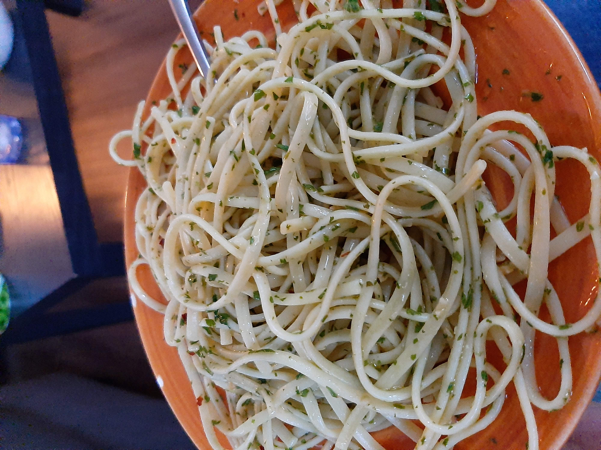

Spaghetti Aglio e Olio

Description:
Spaghetti Aglio e Olio is a simple, delicious dish that can be made quickly and with few ingredients. As its name suggests, its main ingredients are garlic (aglio) and oil (olio)
Red pepper flakes and lemon help enhance the flavor into a rich sauce.
Ingredients
- Spaghetti
- Olive oil
- Red Pepper Flakes
- Lemon
- Garlic
- Parsley
- Begin bring a large pot of pasta to a boil
- While it comes to temperature, mince the garlic and parsley, and chop the lemon in half
- Cook and strain pasta 1 minute LESS than suggested cooking time on box. Reserve 1 cup of pasta water.
- Add garlic and red pepper flakes to the pan, making sure it cooks evenly
- The second the garlic gets some color, toss in the rest of the ingredients and the cooked pasta and half the pasta water.
- Stir and toss to combine into a sauce, adding pasta water or olive oil to desired consistency
- Serve.